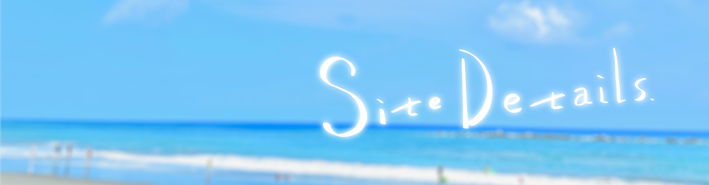

Welcome.
こんにちは！
AboutMe.を訪問してくださり
ありがとうございます！
AboutMe.はその名の通り、
皆さんに私を知っていただくために
自己紹介をするサイトです。
下部にて各コンテンツの内容や、
サイト制作にあたっての詳細を
ご紹介させていただきます。
宜しければご覧になってください。
About Contents.

AboutMe.では、自己紹介を
大きく３つのコンテンツに
わけて行っています。
この3つがそれぞれどんなコンテンツか
こちらで大まかに
ご紹介させていただきます。
コンテンツの説明が不要な方は、上記
コンテンツ名をクリックしていただくか
ページトップのメニューバーより
ご覧ください。
それでは紹介に入らせていただきます！
Profile
１つめは私のプロフィールページです！
基本的なプロフィールと
趣味についてなど、
私の人となりを知っていただくための
ページになっております。
ご興味があればぜひご覧ください。
Learned
２つめは『学んだこと』についての
ページとなっております。
何について学んだことかと言いますと
それは私が【ポリテクセンター長野】
さんで学ばせていただいたことについてです。
どのような内容を学ばせていただいたか
また私がどのように吸収したかについて
随時まとめを更新させていただきます。
こちらもぜひご覧ください！
Portfolio
最後の３つめはポートフォリオの
掲載をするページです！
私が制作したwebページやデザインなど
制作したものについて随時更新させて
いただきますので、
お目通しいただけますと幸いです。
以上３つのコンテンツについての
ご紹介でした！
閲覧いただきありがとうございます。
それではここからサイト制作に
あたってこだわった点など、
サイトについての詳細に
入らせていただきます！
Site Details.
この度、初めて0からサイト制作を
するにあたって意識したポイントや
こだわりポイント。
苦戦したことなどを
ご紹介したいと思います！
意識したポイント
【機能性＆デザイン性重視】
せっかく作るならクオリティの
高いものを作りたい。
そう考えながら
制作に取り掛かりました。
見ていて楽しいデザイン性。
デザインだけではなく
見やすい機能性も意識しました。
【コードの整理整頓】
今回のwebページ制作は
完全に1人体制での制作ですが、
今後チームでの制作をする
場面が来た時のために、
できるだけコードを
見やすく整理しながら
書くことを意識しました。
大きなこだわりポイント
【デザイン】
このサイト制作に使用している
イラストや写真は全て
私が制作・撮影しています！
【ヘッダーアニメーション】
それぞれのオブジェクトが
別々のアニメーションになっていること
はお気付きになりましたか？
ページを開いた時の印象を
強く残すために大きく
こだわったポイントです！
【レスポンシブ対応】
PCやタブレット、スマートフォンなど
ご覧になる端末に合わせた
デザインの最適化を行いました！
PCでご覧になられている方は
windowのサイズを変更して
いただければ画面幅に合わせて
デザインや文字列の改行などが変更
されていくのがわかるかと思います！
ぜひお試しください。
小さなこだわりポイント
【フォント指定】
基本はWebフォントが表示される
ようにしていますが、
何らかの理由で表示
できなかった時のために
各OS標準のフォントも
デザインを選び指定しています。
【ハンバーガーメニュー】
PCの画面幅では表示されませんが、
スマートフォンなどの画面幅になると
メニューを折りたたみ
ハンバーガーメニューが
表示されるようにしました。
【一番上に連れて行ってくれるイッヌ】
ページ最下部までスクロールすると、
左下にタップorクリックで
画面一番上まで連れて行ってくれる
イッヌが登場するようにしました。
ヌルっと連れて行ってくれるのも
こだわりポイントです。
【ファビコンにもイッヌ】
ひっそりとファビコンもイッヌ
にしています！
苦戦したこと
【ヘッダーのアニメーション＆配置】
・思うように動かない。
・オブジェクトの配置が難しい
各画面幅でこの２つの設定を
することは苦戦しました。
【ハンバーガーメニューの配置と影】
ハンバーガーメニューをホバーした際に
メニューアイコンに影ができる
こだわりを追加しているのですが...
box-shadowが使えない作りに
なっているため、苦戦しました。
そしてハンバーガーメニュー自体も
真ん中に配置されてしまったりと
配置に苦戦しました。
まとめ
苦戦したこととして述べたものも
そうでないものも、コツを
掴むまでは試行錯誤の繰り返しでした。
今思えば全て、何故あんなに
時間を使っていたのだろう
と思うような内容ばかりです。
ですが、その時間のおかげで
"問題に直面した時の乗り越え方"
を身に着けられました。
この自己紹介ページを作るという
課題に取り組むことで
得られたこの経験は
今後のお仕事に必ず役に立つと
強く感じています。
それでは、左下のイッヌをクリックして
上部までお戻りください！
ご覧いただきありがとうございました！